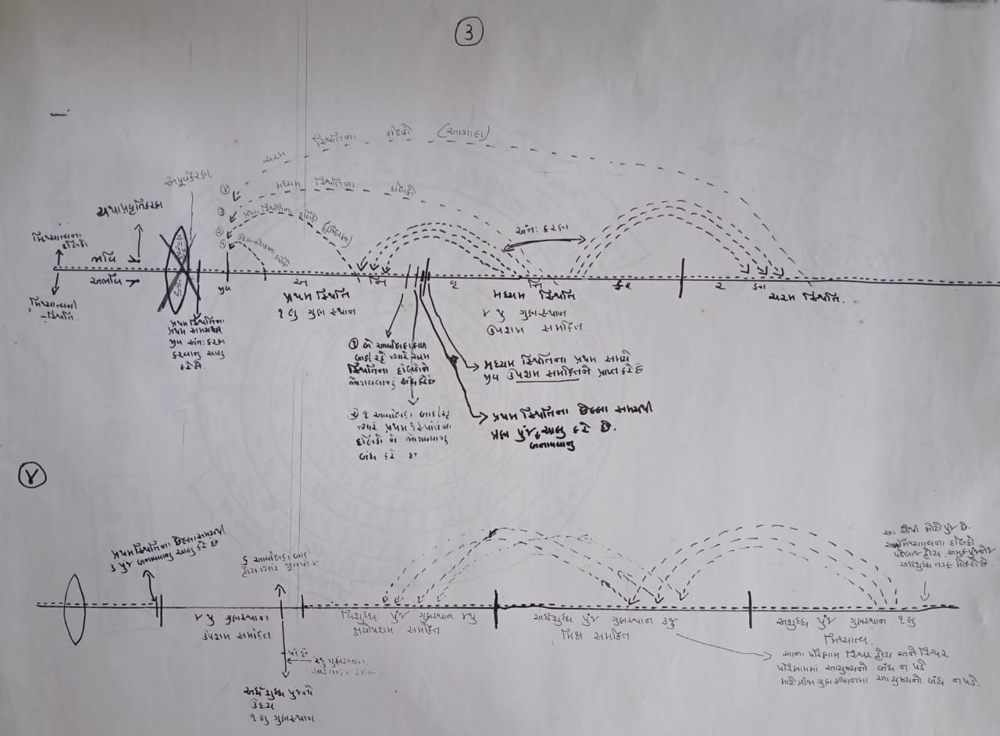

Map 1:

The aatma (soul) has a special quality called gyaan guna — the quality of knowledge.
There are five types of gyaan (knowledge), divided mainly into two groups: paroksh gyaan and pratyaksh gyaan.
1. Paroksh Gyaan (Indirect Knowledge):
This is the knowledge we get through our senses. For example, when you touch something and feel if it is hot or cold, that understanding comes through your senses — this is called paroksh gyaan.
Paroksh gyaan is of two types:
Mati Gyaan – Knowledge through the five senses and the mind.
Shrut Gyaan – Knowledge gained by listening, reading, or studying.
2. Pratyaksh Gyaan (Direct Knowledge):
This is knowledge that does not depend on the senses. It is experienced directly by the soul. There are three types:
Avadhi Gyaan – Knowing things at a distance, but within a limited range and time.
Manahparyay Gyaan – Knowing the thoughts of others through a pure mind.
Keval Gyaan – Perfect, unlimited knowledge. It happens when all coverings over the soul’s knowledge are removed.
Keval gyaan happens instantly when the soul becomes completely pure, and it leads the soul towards moksh (liberation).
Map 2: The Transformative Path of the Soul
The soul resides in delusion (mithyatva). As it begins to burn off its karmas and moves gradually towards right belief (samkit), it starts forming different karmic clusters (punj). In this process, it either accelerates or delays certain karmic results, and clears the intermediate karmic fields. Only then can right belief (samkit) enter. And once samkit arises, only then can the soul progress towards liberation. So, this is a process of the soul’s journey.
Map 3: Jambudweep and Surrounding Cosmos

Jambudweep is one lakh yojanas (an ancient unit of distance) wide. Surrounding it is the Lavana Samudra (Salt Ocean), which is two lakh yojanas wide. In this Salt Ocean, there are four Patalkosh (gigantic whirlpools or reservoirs) located at the four corners. These Patalkosh are so vast that they control all the water of the world. The phenomena of high and low tides are controlled by the deities through these reservoirs.
There are 56 Antardvips (intermediate islands) spread across the four directions. Let me pause here for a moment. So, these 56 Antardvips are divided in such a way that each region has seven sets of such islands. The Jugliya (a mythical or spiritual race of beings) reside in these dvips.
Moreover, in the Lavana Samudra live massive creatures—so large and powerful that they could potentially destroy the earth and all its inhabitants.
Within Jambudweep, there are three key regions: Bharat Kshetra, Airavat Kshetra, and Mahavideh Kshetra. These areas are inhabited with mountains, rivers, and various geographical features. The kind of life that exists in Bharat Kshetra is also found in Airavat and Mahavideh Kshetras.
There are 28 distinct lokas (worlds or realms), and people cannot travel from one to another. Similarly, in all four directions, there are groups of seven Siddha villages (settlements of spiritually liberated souls), where the environment remains exactly the same—neither too hot nor too cold, no rain or storms. People live there peacefully in a calm and balanced climate.
These places are home to the future Tirthankaras (spiritual leaders in Jainism). However, one Tirthankara cannot meet another due to the vast distance between their locations. The same as it is in Bharat Kshetra, so it is in Airavat Kshetra. Despite the similarities, humans have not been able to reach from one kshetra to another, nor have they seen it. Only Kevalis (omniscient beings) can see this through their divine knowledge.
Map 4: Choudhrajlok
Choudhrajlok is a region that includes major places like Locakas, Alokakas, and Choudhrajjupraman. In Lokakas and Alokakas, there is a place called Trashnali. In Trashnali, there are many living beings.
In Alokakas, outside Trashnali, there are non-living beings. Not living beings, but non-living beings. There are no living beings in Trashnali.
In Trashnali, there is hell below. Then, there is the middle world. Then, there is the heaven above.
Then, there is Moksha Gati above. This is the place for this. In this, there is Siddha Bhagwant.
Then, there is the place above. Then, there is the entrance. Then, there is the end.
Map 5: The 12 Aran Kala Chakra.
This Kala Chakra is very big. In it, along with happiness and sadness, time, people, and living beings are spread.
In it, there are two kalas, Ausarapin Kaal and Utsarapin Kaal. In Ausarapin Kaal, time goes from happiness to sadness, step by step, and from sadness, step by step, happiness moves forward.
In this way, the cycle of life continues. And while spreading the karma, it moves forward and moves towards liberation.
Map 6:
When there are nine living beings on earth, when the time is up, when the karma is over, when there are five Kalyanakas of Kewal Jnani, Tirthankar, Aryan Bhagwan, one of them is Chaban Kalyanak, then Janma Kalyanak, then Diksha Kalyanak, then Keval Kalyanak. In this way, there are five Kalyanaks. At each Kalyanak, there is a bright flash of light. And because of that light, one or two beings come out, and on the circumambulation of karma, it moves towards liberation. So, we can understand how much of a great help it is to the living beings of the Kalyanak Tirthankara, because only at the time of Kalyanak, the living beings are able to move towards liberation. The living beings come in the form of non-behaviour and the form of behaviour, That is why I keep moving forward towards Mukti.
Choudhrajlok is a region that includes major places like Locakas, Alokakas, and Choudhrajjupraman. In Lokakas and Alokakas, there is a place called Trashnali. In Trashnali there are many living beings.
In Alokakas, outside Trashnali, there are non-living beings. Not living beings, but non-living beings. There are no living beings in Trashnali.
In Trashnali, there is hell below. Then, there is the middle world. Then, there is the heaven above.
Then, there is Moksha Gati above. This is the place for this. In this, there is Siddha Bhagwant.
Then, there is the place above. Then, there is the entrance. Then, there is the end.
The 12 Aran Kala Chakra.
This Kala Chakra is very big. In it, along with happiness and sadness, time, people, and living beings are spread.
In it, there are two kalas, Ausarapin Kaal and Utsarapin Kaal. In Ausarapin Kaal, time goes from happiness to sadness, step by step, and from sadness, step by step, happiness moves forward.
In this way, the cycle of life continues. And while spreading the karma, it moves forward and moves towards liberation.
When there are nine living beings on earth, when the time is up, when the karma is over, when there are five Kalyanakas of Kewal Jnani, Tirthankar, Aryan Bhagwan, one of them is Chaban Kalyanak, then Janma Kalyanak, then Diksha Kalyanak, then Keval Kalyanak. In this way, there are five Kalyanaks. At each Kalyanak, there is a bright flash of light. And because of that light, one or two beings come out, and on the circumambulation of karma, it moves towards liberation. So, we can understand how much of a great help it is to the living beings of the Kalyanak Tirthankara, because only at the time of Kalyanak, the living beings are able to move towards liberation. The living beings come in the form of non-behaviour and the form of behaviour, That is why I keep moving forward towards Mukti.